Add a stereo jack to Sennheiser RS-120 Wireless Headphones

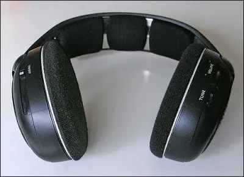
View full-size image
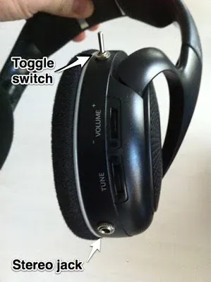
View full-size imageBackground:
This is a simple project that I did over a couple of hours one Saturday. I decided to make a blog entry about it because I think it makes a good project for someone just starting in electronics.
What I wanted to do was add a stereo output to a pair of Sennheiser RS-120 wireless headphones my wife and I use at home when we don't want to disturb each other.
For normal day to day use, the Sennheisers work great. They have long range, the batteries last forever, and they're comfortable for extended use. However, they don't lend themselves to being worn during workouts.
I have an elliptical machine at home and can't bear to exercise unless I'm distracted by the TV. Since the elliptical machine is rather noisy, I either have to turn up the TV volume--which my wife doesn't like--or wear the headphones, which I don't like because my ears sweat all over the pads. Yeah, I know, gross.
The solution, to keep my wife happy ("Happy wife, happy life" as the saying goes) and to have a more comfortable workout, was to add a jack to the Sennheisers so that I could use my own exercise-friendly earbuds, while still enjoying wireless audio.
Headphone circuitry layout:
The wireless, audio and charging circuitry of the Sennheiser RS-120's is split across the left and right ear cups.
As illustrated in the drawing below, the left ear cup printed circuit board (PCB) has the power switch, houses the rechargeable batteries and, of course, the left speaker. The right ear cup PCB has the wireless receiver, volume and tuning knobs and the right speaker. Wires run through the headband carrying power from the left ear cup to the right, and an audio signal from the right pcb to the left PCB and speaker.
At first I thought I'd have to run extra wires through the headband, as I wasn't sure where the left speaker amplification was happening--did the left audio signal already "arrive" amplified from the right side, or did the left PCB do final amplification. To determine what wired carried what signal, I traced connections on the left and right PCBs and used my multimeter to detect changing voltage values off the leads I suspected carried the audio signals. It would have been better for me to use an oscilloscope, but I don't have one. However, I did connect the leads I suspected carried the audio signals to my earbuds using alligator clips.
Anyway, I determined that right PCB did all the amplification and sent the left speaker audio signal over to the left ear cup. I could do all my modifications on the right side without needing to run additional wires through the headband. Here's a simplified circuit diagram:
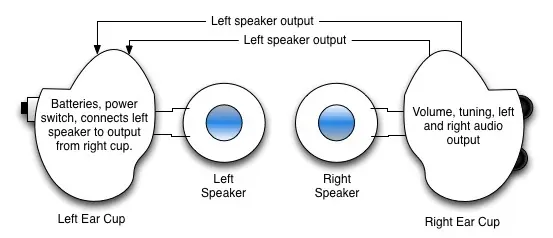

What you'll be doing
You will be adding a switch to your headphones that will let you switch between two sets of speakers: the internal ones and an external set (via a stereo jack).
The circuit board in the right ear cup has electronic components and solder points on both sides. On the front side, there is little but two solder points that connect directly to the right speaker.
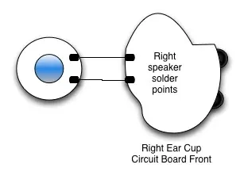

The back side of the right PCB has many components, including two potentiometers for volume and tuning and five solder pads at the top of the circuit board. The two left-most solder pads connect to wires which go through the headband and eventually connect to the left speaker.
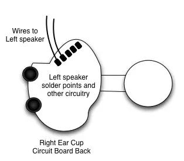

We will be disconnecting one of the wires to the left speaker on the back of the PCB and one of the wires to the right speaker on the front of the PCB and connecting them up to the switch. Then we'll run wires to the two sets of speakers off the switch.
Here's a diagram showing the basic circuit:
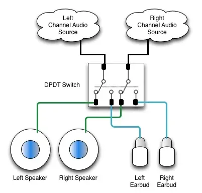

Notice that we'll be using a DPDT switch. That stands for "Double-Pole, Double-Throw". Double-pole means that the switch handles two circuits, while double-throw means there are two positions to the switch. Looking at the circuit diagram above, the two circuits are the left and right audio signals.
What you'll need
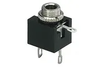
View full-size image- 1/8" panel-mount stereo headphone jack, 3 conductor.
This is what you'll plug your external headphones into. Panel mount means that the top of the jack as a nut so that you can screw it into a properly-sized hole. The 3 conductors are for left, right and ground connectors.
Radio Shack model 274-249.

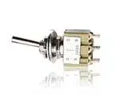
View full-size image- DPDT Micro-mini toggle switch.
DPDT stands for "double-pole double-throw". Double-pole means the switch handles two circuits, and double-throw means that the switch has two positions. I chose this switch because I wanted to handle two circuits (the left and right audio circuits) and two positions (to select either the internal speakers or the stereo audio jack). You'll want a micro-mini switch because there isn't much room in the ear cups.
Radio Shack model 275-626.

- Stranded hookup wire (22 to 26 gauge)
This is just what it sounds like: it's wire. Get the stranded type (as opposed to solid copper), as it's easier to bend and use. Since you'll be working in a tight space, stranded wire will be better.
Radio Shack model 278-1224. - Soldering Iron
- Solder
Step-by-Step

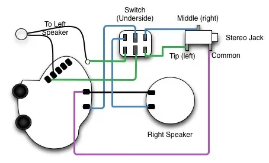
View full-size image- Remove the ear pad on the right side by rotating it.
- Unscrew the speaker panel.
- Remove the screws holding down the printed circuit board.
- Using the soldering iron, disconnect the speaker cable on the lower solder point on the front of the PCB by heating it until you can pull the wire off.
- On the back of the PCB, heat the left-most solder pad up top until you can disconnect the wire connected to it. This is one of the two wires that connects to the left speaker.
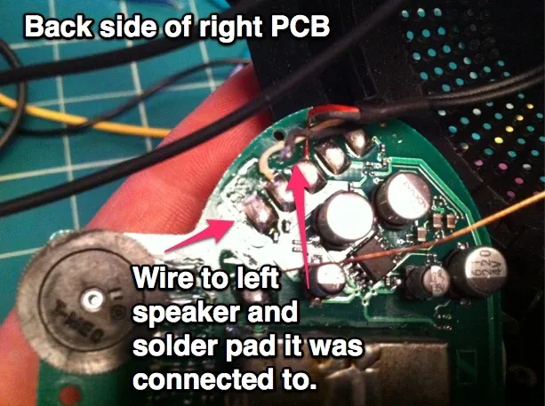

- Drill a hole at the top of the right ear cup the size of the switch top. I made successively larger holes until the switch fit through. The reason I put the switch up top is so that I wouldn't accidentally flip the toggle if I leaned back on my couch. Don't screw the switch into place yet. It will be easier to solder all the wires that way.
- You will also need to make a hole for the stereo jack. I placed mine toward the bottom of the ear cup. As with the switch, don't screw it into place.
- Solder a wire from the now free front solder pad to one of the center posts on the DPDT switch. This is the right channel audio signal.
- Solder another wire from the left-most free solder pad on the top of the PCB back to the other center post of the switch. This is the left channel audio signal.
- Solder a wire to each of the four remaining posts on the switch. You will be connecting each set of wires to the speakers, and the other set to the stereo plug.
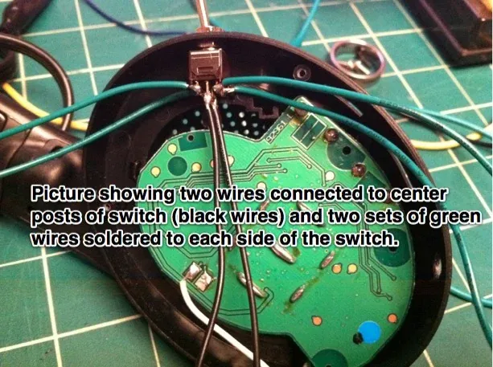

- Pick a set of wires on either side of the center posts of the switch. We're going to connect those two wires to the left and right speakers. Select the wire that is adjacent to the center post which is connected to the left audio channel (it's the center post which is connected to the pad on the back side of the PCB). In the diagram of the circuit, all the left channel wires are in GREEN. Solder this left channel wire to the wire which leads back to the left speaker. Remember that the wire that connects back to the left speaker used to soldered to the back of PCB. To keep this wire to wire connection from causing a short circuit, use some electrical tape.
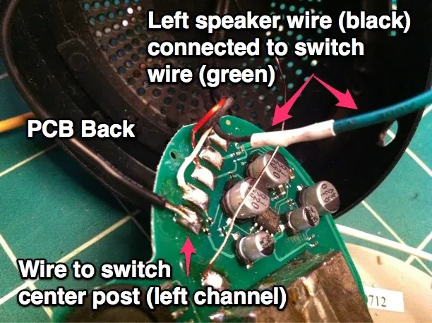

- Now solder the right channel from the same side of the switch to the free solder pad on the right speaker. In the circuit diagram, the right channel audio wires are in BLUE.
- Test that you can hear audio out of the speakers when the switch is flipped to the correct side.
- Now we have two wires left on the switch. These are the right and left channels that we are going to solder to the stereo jack.
- Take the wire that is adjacent to the center post which is connected to the left audio channel. You will connect this to the left channel connector on the stereo jack. Typically the left channel on a set of headphones is the connector that makes contact with the tip of the stereo plug. Take a look at the diagram for reference.
- Now you have one wire remaining coming off the switch. This is the right channel and it should be soldered to the connector in the stereo plug that makes contact with the center part of the stereo plug. Depending on the configuration of the stereo jack you have, the left and right connectors might be hard to pick apart. Refer to the packaging for the jack to figure out which is which.
- Finally, you will need to solder a return wire from the stereo jack common or ground connector back to the PCB. As shown in the diagram, I soldered the jack common to the front of the PCB, to the top solder pad that feeds the right speaker.
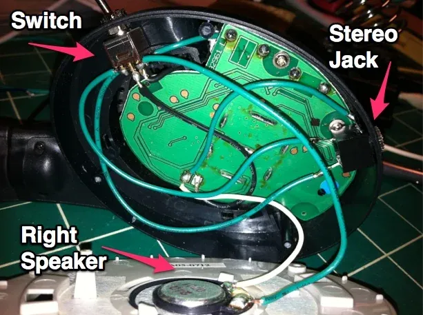

- Test the internal and external speakers by flipping the switch back and forth. If you soldered everything correctly, you'll alternatively hear audio from the built-in speakers and through the stereo jack.
- Carefully screw the switch and stereo jack into place and pack all the wires into the ear cup.
- Finally, screw the PCB and then speaker back into place and twist the ear pad back on.
Additional modification
It was pointed out to me by my friend Josh, who knows more about electronics than I do, that I could have used a 4 conductor stereo jack and gotten rid of the toggle switch entirely. A 4 conductor jack acts like a switch as well. The act of inserting a stereo plug into the jack makes it behave like a switch being flipped, so that you can go from the internal speakers to the external audio jack without the need of a separate switch like I used.
I like the retro look and feel of the toggle switch, however, so I'm glad that I used it in the project.
16 comments
Comments are closed. These were left on the previous version of this site. Questions? Get in touch.
It won't cause any problems to remove the "load" from the amplifier, as long as the wiring you have in mind isn't creating a short circuit. However, I wonder if adding a mute button is necessary for headphones, given that the power button is just as accessible and accomplishes the same thing.
Raul
https://dl.dropbox.com/u/15119876/back.jpg
https://dl.dropbox.com/u/15119876/front.jpg
Thank you for your patience.
Raul
the radio receiver
http://www.datasheetcatalog.org/datasheets/320/199134_DS.pdf
and the amplifier:
http://www.datasheetcatalog.org/datasheet/sony/a6801979.pdf
It is a cxa1622m amplifier. Now I see two "IN"'s on the IC pinout. On my stereo cable there will be 3 wires from the stereo jack. Should I try one to in1, one to in2 and the ground to gnd?
Raul
"It was pointed out to me by my friend Josh, who knows more about electronics than I do, that I could have used a 4 conductor stereo jack and gotten rid of the toggle switch entirely. A 4 conductor jack acts like a switch as well. The act of inserting a stereo plug into the jack makes it behave like a switch being flipped, so that you can go from the internal speakers to the external audio jack without the need of a separate switch like I used."
I have the EXACT same issue as you with the elliptical. I googled it thinking no one would have had the same thought as me. It blew my mind you did such a great write-up. Great minds think alike apparently. I had thought of this option or finding a separate receiver that used the same MHz as the RS120 base to plug buds into.
I have a problem and I'll put my question here cause it looks like you know details about this headset. Wire that is connected to receiver had other side connected to what? I am fixing headset but don't know where to connect other end of that wire. Help will be highly appreciated and thanks in advance.
Hi neno. I'm sorry to say but I don't remember where that wire connects. I looked over the wiring diagrams and pictures in my post to see if they would jog my memory, but they didn't.
Thanks for your answer...Googled it but couldn't find anything helpfull. Now I am stuck with dissasembled headset, left speaker (the one near batteries) is not working, not sure is it because of that wire.
I remembered that i have an old/broken pair of RS120's that I bought off of eBay for parts a long time ago. I'll open it up, take a couple of pictures and send that to you. Hopefully that'll help.
If you still want to powered the headphone, just connect input wire to volume pin 2 and 3 as input L and R, ground to ground. You will hear it louder (because you still using the batteries to powered the headphone)
TENHO UM FONE EU GOSTARIA SABER SE É POSIVEL USAR UM CABO COM JEK P2 COMO UM FONE COMUM